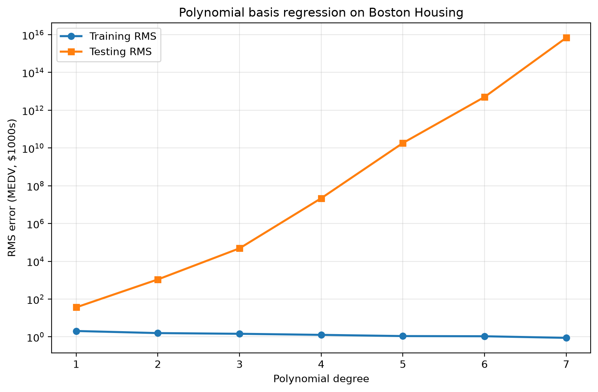
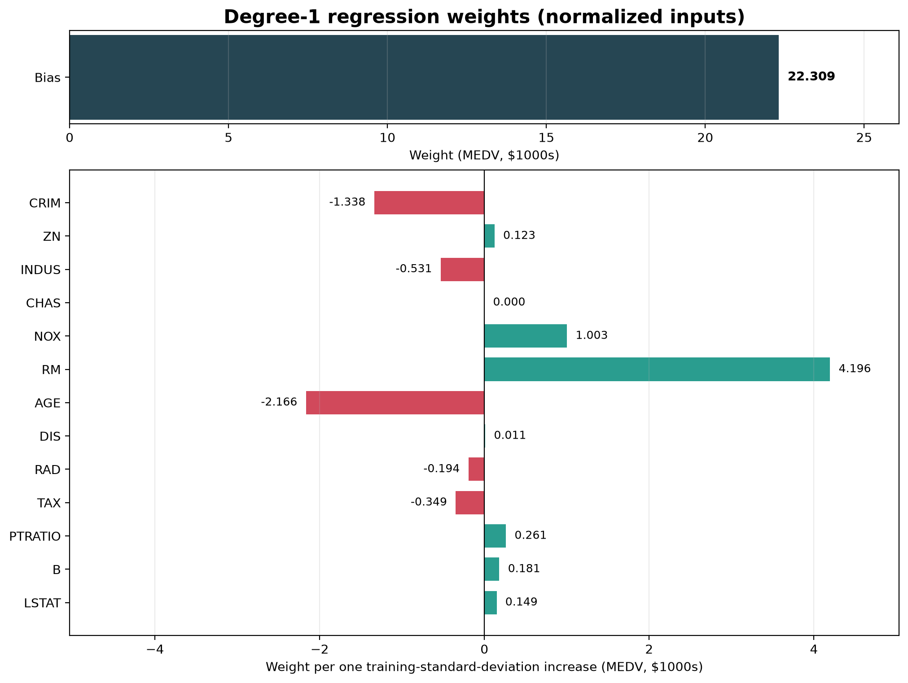
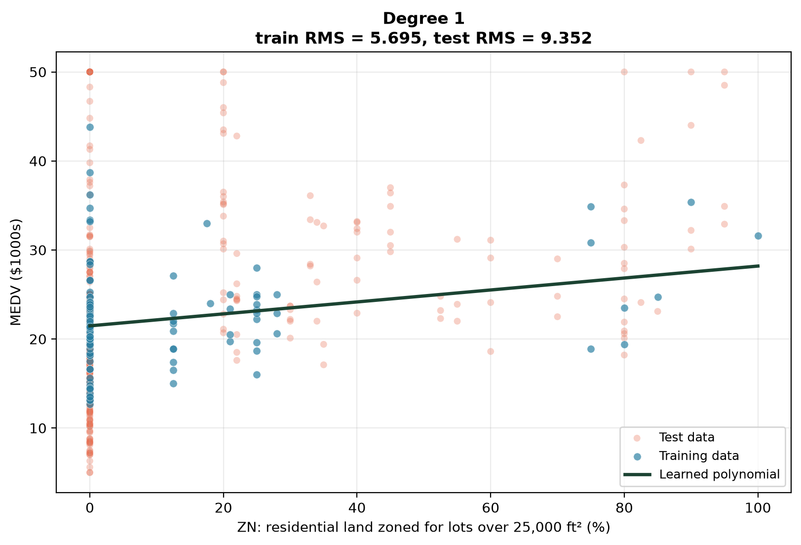
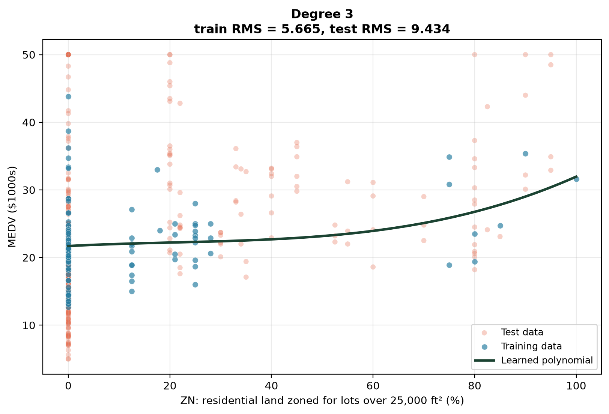
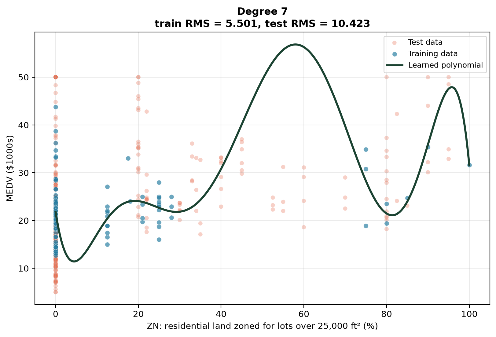
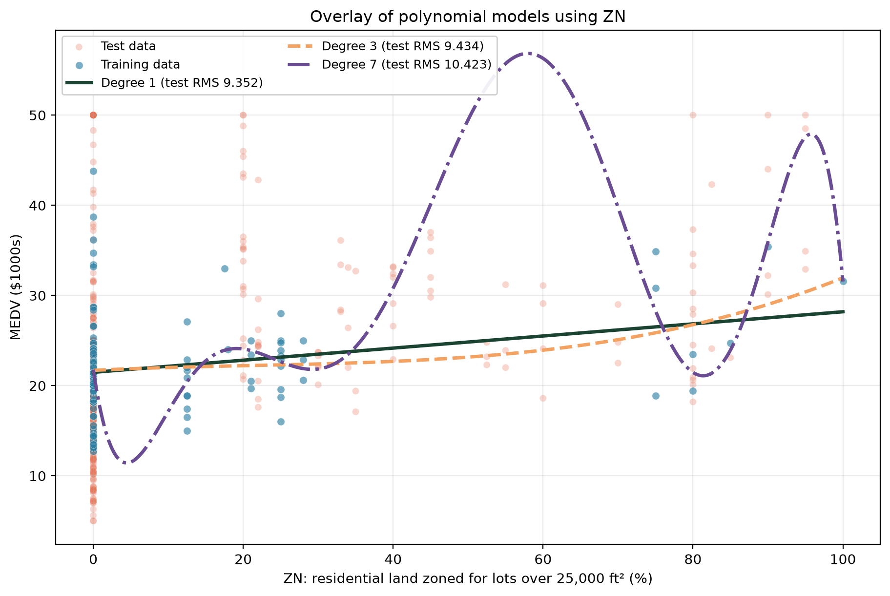
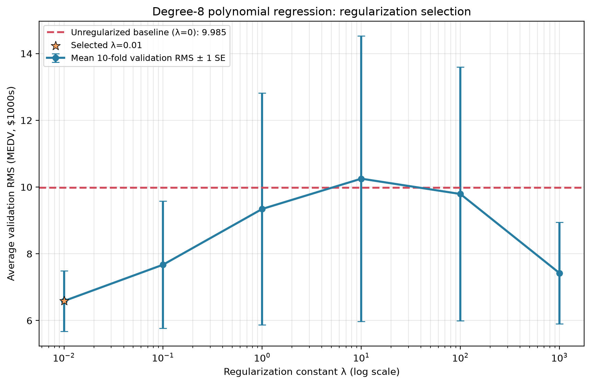
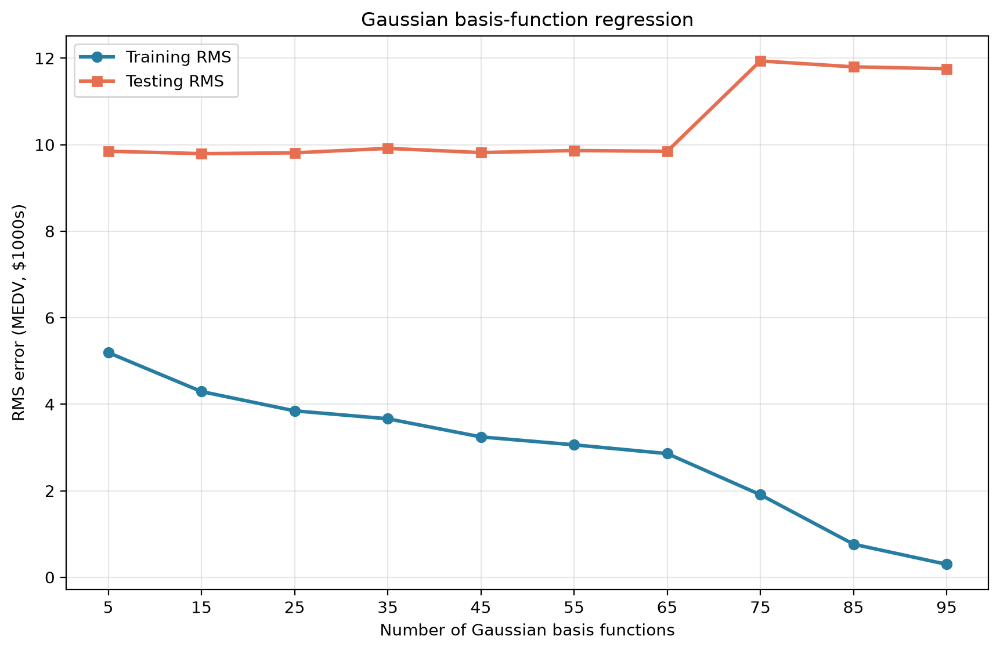
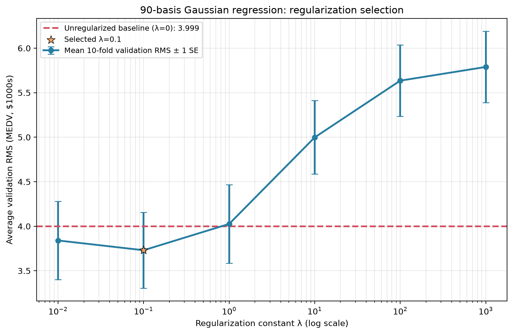

SYDE 572 · Introduction to Pattern Recognition · Assignment 2
Linear Basis-Function Regression with Polynomial and Gaussian Bases
Abstract—This report fits linear basis-function regression models to the Boston Housing data, predicting median house value (MEDV) from 13 town features. The first 100 observations are used for training and the remaining 406 for testing. Part 1 uses single-variable polynomial bases, examining overfitting, the degree-1 weights, one-dimensional fits, and L2 regularization selected by 10-fold cross-validation. Part 2 uses Gaussian bases centred on randomly chosen training points, examining the effect of the number of bases and of regularization.
Index Terms—linear regression, basis functions, overfitting, ridge regularization, cross-validation.
I. Data and Setup
The Housing data contain 506 observations with 13 features and the target MEDV (in $1000s). Observations 1–100 form the training set and 101–506 the test set. Every feature is standardized as \(z_j=(x_j-\mu_j)/\sigma_j\) using training-set statistics only, and the same transformation is applied to the test data. The feature CHAS is 0 for all 100 training rows, so its scale is set to 1 and its weight is unidentifiable (zero). Error is reported as root-mean-square error
Unregularized fits use least squares (numpy.linalg.lstsq); regularized fits solve \(\mathbf w=(\Phi^\top\Phi+\lambda I')^{-1}\Phi^\top\mathbf y\), where \(I'\) leaves the bias unpenalized. All random choices use seed 572.
II. Part 1 — Polynomial Basis Functions
The basis is \((1,x_1,x_1^2,\dots,x_1^M,x_2,x_2^2,\dots,x_{13}^M)\): monomials of a single variable with no cross-terms, giving \(1+13M\) weights for degree \(M\).
A. Part 1(a): Training and Test Error versus Degree
| Degree | Training RMS | Testing RMS |
|---|---|---|
| 1 | 2.0372 | 36.44 |
| 2 | 1.5781 | 1097 |
| 3 | 1.4491 | 4.867e+04 |
| 4 | 1.2705 | 2.186e+07 |
| 5 | 1.0966 | 1.836e+10 |
| 6 | 1.0725 | 5.024e+12 |
| 7 | 0.8815 | 6.879e+15 |

Training error falls steadily with degree, but test error grows by many orders of magnitude, a severe case of overfitting. Degree 7 has 92 weights for only 100 training points, so it fits the training sample closely. The first 100 rows are also not representative of the rest: after standardization with training statistics, some test features lie far outside the training range (CRIM reaches \(|z|\approx229\), RAD 14.5), and a degree-7 term on such a value is of order \(10^{16}\), which matches the observed test RMS. Even degree 1 has a test RMS of 36.4 for the same reason. Degree 1 is the best of those evaluated.
B. Part 1(b): Degree-1 Weights
| Index | Term | Weight | Train mean | Train std |
|---|---|---|---|---|
| 0 | bias | 22.3090 | — | — |
| 1 | CRIM | -1.3380 | 0.2833008 | 0.3871512704 |
| 2 | ZN | 0.1230 | 12.385 | 22.85167992 |
| 3 | INDUS | -0.5311 | 6.6687 | 3.146500168 |
| 4 | CHAS | 0 | 0 | 0 |
| 5 | NOX | 1.0027 | 0.471321 | 0.04660157786 |
| 6 | RM | 4.1956 | 6.23441 | 0.4883777656 |
| 7 | AGE | -2.1663 | 56.252 | 27.33905807 |
| 8 | DIS | 0.0107 | 5.177271 | 1.404997525 |
| 9 | RAD | -0.1938 | 3.96 | 1.385063175 |
| 10 | TAX | -0.3486 | 289.49 | 45.69190191 |
| 11 | PTRATIO | 0.2613 | 18.69 | 1.69041415 |
| 12 | B | 0.1811 | 385.3015 | 27.24965825 |
| 13 | LSTAT | 0.1488 | 10.7729 | 5.671459653 |

The weight on the 6th feature, RM (average rooms), is \(w_5=4.196\). One training standard deviation of RM is 0.488 rooms, so this is about \(4.196/0.488\approx 8.6\) thousand dollars per extra room. The positive sign and large magnitude are reasonable, since larger dwellings are worth more. The weight on the 8th feature, DIS (weighted distance to employment centres), is \(0.0107\), effectively zero. This is plausible because DIS is correlated with other location variables and adds little once they are included. Coefficients are conditional and not causal; correlated predictors and the unrepresentative training split can produce unexpected signs. The bias (22.31) is the mean training MEDV.
C. Part 1(c): One-Dimensional Visualization (ZN)
Using only the standardized second feature ZN, polynomials of degree 1, 3 and 7 are fitted.
| Degree | Training RMS | Testing RMS |
|---|---|---|
| 1 | 5.695 | 9.352 |
| 3 | 5.665 | 9.434 |
| 7 | 5.501 | 10.423 |




The degree-1 fit shows a modest positive trend, but points with the same ZN (especially ZN = 0) span a wide range of MEDV, so ZN alone explains little. Degree 3 adds mild curvature without improving test error (9.352 to 9.434). Degree 7 oscillates in sparsely sampled regions; its training RMS falls to 5.50 while test RMS rises to 10.42, again overfitting. Degree 1 is the most defensible.
D. Part 1(d): L2 Regularization with Cross-Validation
A degree-8 polynomial in ZN is fitted to the first 100 points, with \(\lambda\in\{0,0.01,0.1,1,10,100,1000\}\) and 10-fold cross-validation. Normalization is re-estimated inside each fold from its 90 fitting points.
| \(\lambda\) | Mean validation RMS | Std. error |
|---|---|---|
| 0 | 9.985 | 4.135 |
| 0.01 | 6.586 | 0.907 |
| 0.1 | 7.674 | 1.906 |
| 1 | 9.344 | 3.474 |
| 10 | 10.251 | 4.279 |
| 100 | 9.792 | 3.803 |
| 1000 | 7.422 | 1.518 |

The lowest validation error (6.586) occurs at \(\lambda=0.01\), versus 9.985 unregularized, so I would choose \(\lambda=0.01\). Small shrinkage tames the high-variance degree-8 fit, while large penalties bias it toward a flat model. The curve is not monotonic and the error bars are wide because the dataset is small.
III. Part 2 — Gaussian Basis Functions
The basis is \(\phi_j(\mathbf x)=\exp(-\lVert\mathbf z-\boldsymbol\mu_j\rVert^2/2\sigma^2)\) with \(\sigma=1\) on all 13 standardized features, plus a bias. Centres \(\boldsymbol\mu_j\) are the first \(K\) points of a random permutation of the training points.
A. Part 2(e): Number of Basis Functions
| K | Training RMS | Testing RMS |
|---|---|---|
| 5 | 5.193 | 9.848 |
| 15 | 4.293 | 9.792 |
| 25 | 3.847 | 9.811 |
| 35 | 3.663 | 9.914 |
| 45 | 3.244 | 9.817 |
| 55 | 3.061 | 9.864 |
| 65 | 2.858 | 9.846 |
| 75 | 1.908 | 11.935 |
| 85 | 0.764 | 11.798 |
| 95 | 0.299 | 11.755 |

Training error decreases monotonically from 5.19 to 0.30. Test error stays near 9.8 for \(K\le65\) (minimum 9.79 at \(K=15\)), then jumps to about 11.8–11.9 for \(K\ge75\), as the model (up to 96 weights for 100 points) nearly interpolates the training data. This is overfitting. Exact values depend on the random centres and on \(\sigma\).
B. Part 2(f): L2 Regularization with Cross-Validation
With 90 basis functions and all features, 10-fold cross-validation is run per \(\lambda\). In each fold, normalization and the 90 centres come from the fitting points only.
| \(\lambda\) | Mean validation RMS | Std. error |
|---|---|---|
| 0 | 3.999 | 0.487 |
| 0.01 | 3.840 | 0.440 |
| 0.1 | 3.731 | 0.426 |
| 1 | 4.026 | 0.442 |
| 10 | 4.998 | 0.412 |
| 100 | 5.635 | 0.401 |
| 1000 | 5.789 | 0.402 |

The minimum validation RMS (3.731) is at \(\lambda=0.1\), so I would choose \(\lambda=0.1\). Modest shrinkage improves on the unregularized 3.999, while \(\lambda\ge10\) underfits.
IV. Supporting Files
Run from this folder with python part1a.py etc.; each script writes its figure and CSV to output/.